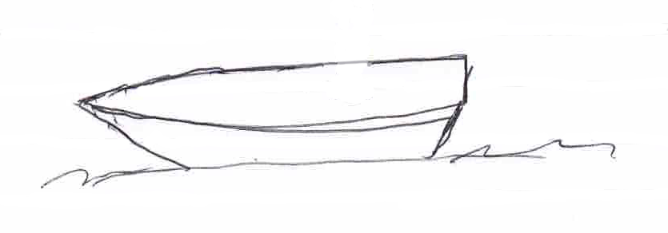
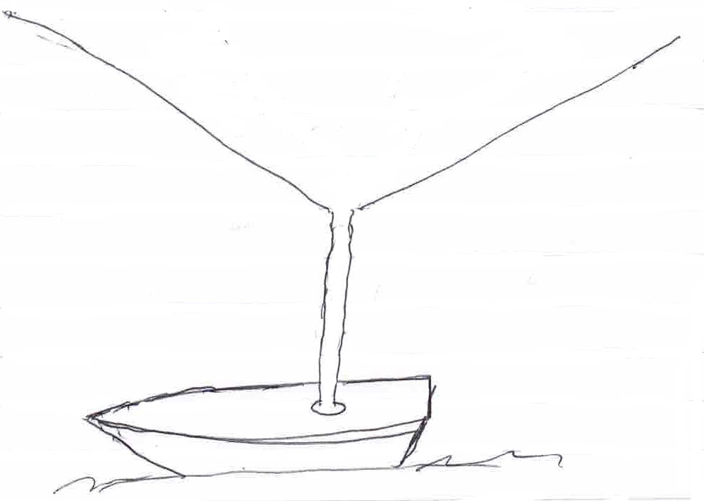
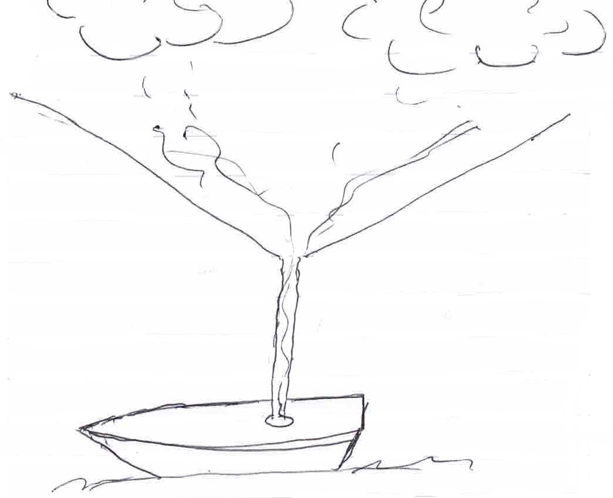
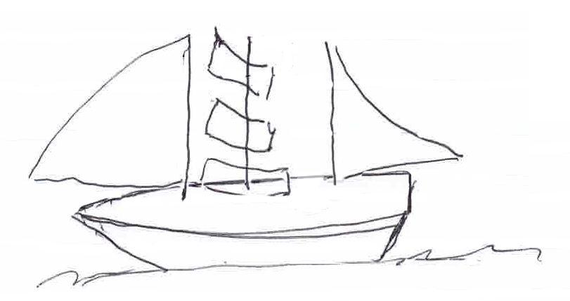
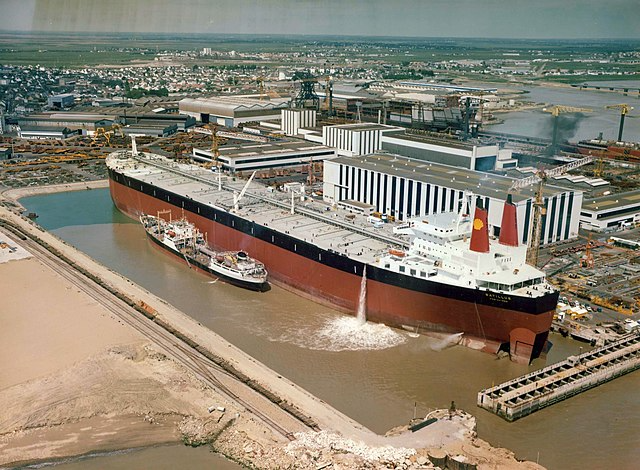
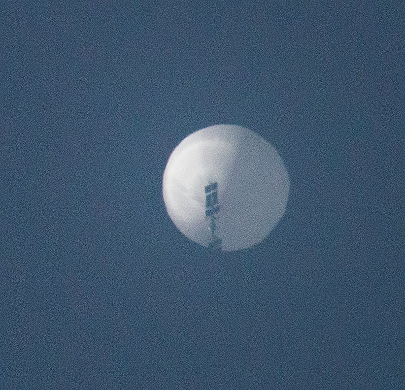
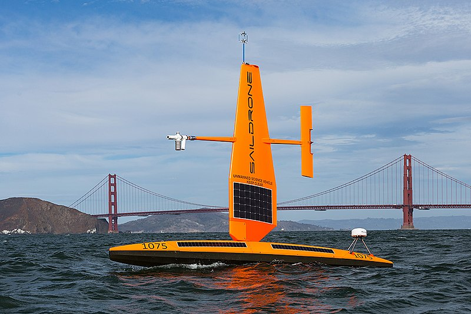
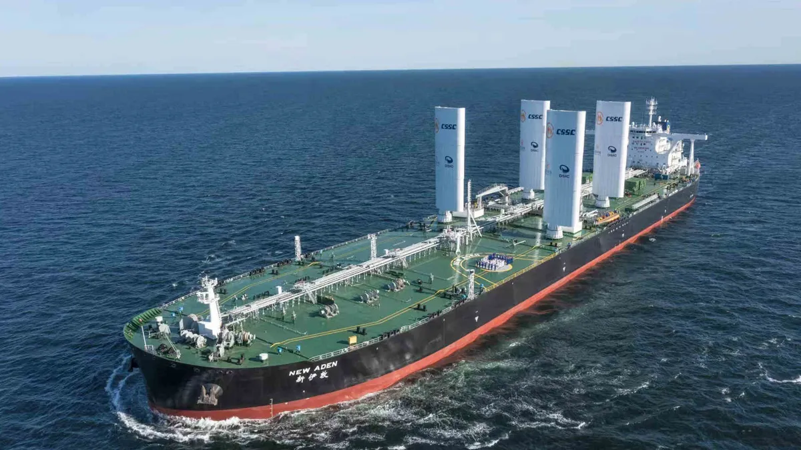

Caveat: This installment contains a lot of math. If that causes you to be anxious, you may want to skip it!
Let’s reiterate the thrust here: We’re seeking approaches that use proven tools to improve the (net) carbon capture by biological systems to replenish the carbon we’ve removed and burned over the past 350 years. One method is to increase total photosynthesis through irrigation, transmogrifying the problem to one of supplying fresh water to arid lands and storing carbon as soil carbon.
This “third solution” concept I’m considering is an industrial-scale cistern, essentially a super-tanker-scale ocean-going vessel designed to collect rainwater over the ocean and deliver it to arid areas using sailing principles. It’s a simple vision, but there are several components that need to be fleshed out to see whether it’s practical.
As a caveat, I’m hardly an engineer, so my graphics are crude and imprecise, and my math involves high-school-level geometry and trigonometry. But I was always fond of “story problems”, which is what this issue is about.
So, let’s get to the “story”. Start with a boat:

Add a funnel—suspended in the air but anchored to the boat:

Position it under a rainstorm to collect fresh water:

When filled with fresh water, disconnect the funnel and raise the sails to move the boat to a discharge location:

The components of this vision have all been demonstrated:
-
We can construct large boats.

Batillus -class supertanker ready for launch in France . Designed for carrying crude oil, the spec includes a carrying capacity of over 500,000 tons. The deck area is approximately 2.5 hectares or about 6 acres. -
We can position even heavy objects above the earth precisely in space and time using only lighter-than-air gases and solar power (viz., the Chinese spy balloon)

From Wikimedia Commons , credit Chase Doak, CC BY-SA 4.0 <https://creativecommons.org/licenses/by-sa/4.0>. Balloon dimensions were estimated to be about 200 ft. tall, carrying a payload of about the size of a commercial airliner. -
We can move cargo using wind power alone (this does not necessarily require a human crew, see SailDrone)

Credit Jennvirskus, CC BY-SA 4.0 <https://creativecommons.org/licenses/by-sa/4.0>, via Wikimedia Commons
{kind=link}
{kind=link}
The supertanker pictured above can carry 500,000 cubic meters or 400 acre-feet of water 1 with a deck area of about 6 acres. If the tanker were parked in a rainy area of the ocean, it would take years to collect a full load of water. So, for practical purposes, we’re going to need a funnel.
To simplify matters, based on the rain analysis presented last time 2 , let’s assume that the supertanker would be parked for a month and that the total rainfall was one foot during that time. That would mean that the area covered by the cone of the funnel would need to be 400 acres if it sailed away with a full load after a month. If conical, such a funnel would have a radius of 2,355 ft (roughly eight football fields). If it were the shape of a typical laboratory funnel (60° taper), the funnel would extend for 4,080 feet below the opening. So, suspending the funnel at around 5,000 feet would allow ample clearance to collect the precipitation. This is lower than the bottom of most rainclouds, so we’re OK so far.
The area of such a cone would require about 4 million square yards of material. I found a reference for a hot air balloon that suggests a figure of 1.9 ounces per square yard of ripstop nylon coated with silicone. So, such a cone would weigh around 475,000 pounds. If it were to be lifted with hydrogen, the lifting capacity of 71 pounds per 1,000 cubic feet that’s 6.7 million cubic feet of hydrogen. That amount could be contained within a sphere with a radius of about 120 feet. That’s a giant balloon, but we haven’t stretched beyond the possible. Plus, using hydrogen for lift, the gas could be generated electrochemically on board and used for various purposes as an energy store as the cone was deflated. Conceptually.
Instead of using a single conventional balloon, we could outfit the rim of the funnel as a donut-shaped balloon. How big around would the donut need to be? By my math, the radius would need to be approximately 12 feet. That also seems doable with suitable materials.
But, sailing a supertanker? That seems challenging to imagine, right? Well, it’s not a new idea, of course. But it’s now being reduced to practice:

Allegedly, the sails save almost 10% on fuel costs without costing time, and other “green” companies aim for 100% wind power in the next decade. In this instance, I imagine 40 sails without a crew (fully remote control). Using historic times for clipper ships sailing between Plymouth, England, to Sydney, Australia, a sailboat can cover about 130 miles per day. The route I previously considered, from the rain-soaked Indian Ocean west of Indonesia to the arid lands adjacent to the North West Shelf of Australia, the trip would take around two weeks.
So, staying firmly on the back of my envelope, a single supertanker, outfitted with a notional hydrogen-filled balloon funnel, could make six round trips per year, delivering enough water to irrigate 2,400 acres of land (about 1,000 hectares) for agriculture, assuming 1 foot of irrigation per crop. Newly irrigated land captures around 10 tons per hectare per year 3 . This single-ship operation would remove a megaton of carbon dioxide per year as soil organic carbon, exclusive of harvest. Not bad.
Of course, moving water is energy-intensive, and these are crude numbers. But I haven’t been convinced that the approach is crazy or unworkable. Yet.
Stay tuned.
This is the largest supertanker ever constructed, which is an upper limit. A cubic meter of water weighs a ton, and there are 1233.5 cubic meters in an acre-foot.